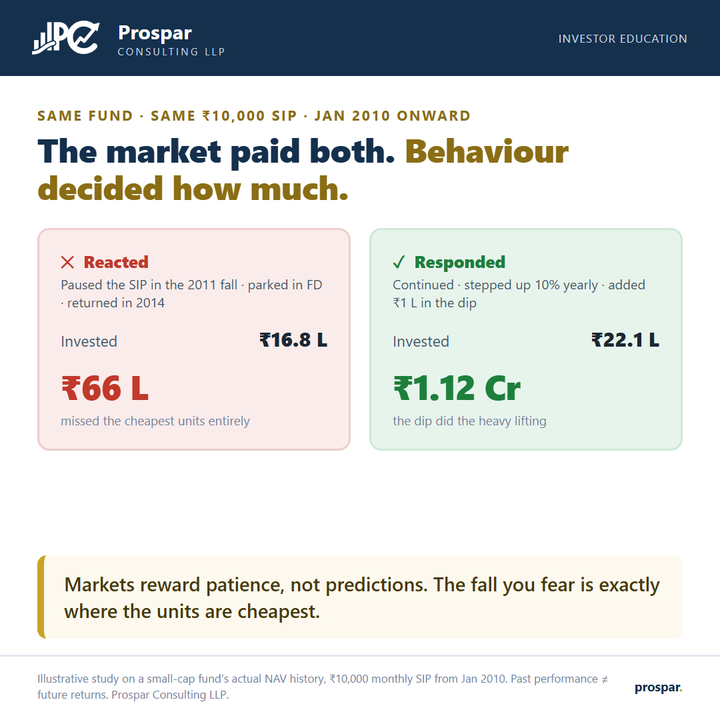

The two investors inside you.
Every investor carries both of these people. The same fund, the same ₹10,000 SIP and the same fifteen years let us measure exactly what each one costs.

Both investors started a ₹10,000 monthly SIP in the same small-cap fund in January 2010. Within two years the market handed them a 30% fall — the standard entrance exam. One reacted: paused the SIP, moved the money to a fixed deposit “until things settle”, and returned only in 2014 once headlines turned cheerful. The other responded: kept the SIP running, raised it 10% each year alongside increments, and put one extra lakh to work during the fall itself.
Fifteen years on, the reactor’s ₹16.8 lakh grew to about ₹66 lakh — a perfectly respectable outcome that quietly forfeited a fortune. The responder’s ₹22.1 lakh became about ₹1.12 crore. The extra ₹5.3 lakh invested explains only a fraction of the gap; the rest came from owning the cheap units the reactor refused to buy.
The uncomfortable symmetry: the market treated both identically. Same fund, same NAVs, same crashes, same recoveries. The only variable was the hand on the pause button — which is the one variable entirely within your control.
Run the responder’s plan — a stepped-up SIP — and see what staying the course builds at your numbers.
{kind=link}
Illustrative study on a small-cap fund’s actual NAV history, ₹10,000 monthly SIP from Jan 2010. Past performance does not guarantee future returns. For education only — not advice. Prospar Consulting LLP.